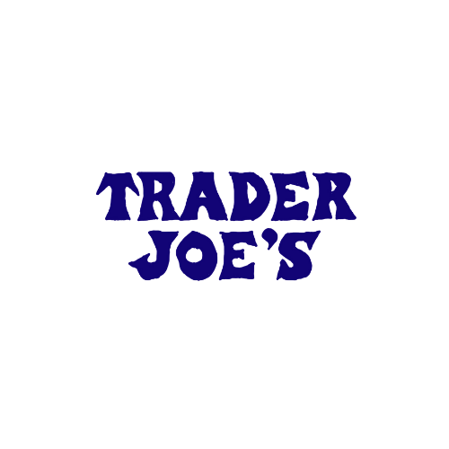

<!DOCTYPE html>
<html lang="en">

</html>
<head>
    <meta charset="UTF-8">
    <meta name="viewport" content="width=device-width, initial-scale=1.0">
    <link rel="shortcut icon" type = "image/png" href="images/logofav.png">
    <link rel="stylesheet", href="css/html5reset.css">
    <link rel="stylesheet", href="css/style.css">
    <link rel="preconnect" href="https://fonts.googleapis.com">
    <link rel="preconnect" href="https://fonts.gstatic.com" crossorigin>
    <link href="https://fonts.googleapis.com/css2?family=Alegreya+Sans+SC:wght@100;400&family=Playfair+Display&display=swap" rel="stylesheet">
    <title>Grocery Stores</title>
</head>
<body>
    <div class = "skip"><a href = "#gskip">Skip to Main Content</a></div>
    
        <nav>
            <ul>
                <li><a href="index.html">Home</a></li>
                <li><a class = "groceries" id = "current" href= "groceries.html">Groceries</a></li>
                <li><a href="exercise.html">Exercise</a></li>
                <li><a href="restaurants.html">Restaurants</a></li>
                <li><a href = "contact.html">Contact</a></li>
            </ul>
        </nav>

        <div class = "logo">
            
        </div>
        
    
    <main class="groceries_container" id = "gskip">

        <header class = groceries_main_header>
            <h1>My Guide to Life as a Student in Ann Arbor</h1>
            
        </header>
        <h2 class="groceriesheader">Grocery Stores for Every Type of Shopper</h2>
        <div class="groceriesformat">
            <div class = tjflipcard>
                <div class="tjflipcard-inner">
                    <div class="tjflipcard-front">
                        
                    </div>
                    <div class="tjflipcard-back">
                        <ul>
                            <li><p>Top 5 Favorites:</p></li>
                            <li><p>1. Frozen Kung Pao Chicken</p></li>
                            <li><p>2. Chicken Soup Dumplings</p></li>
                            <li><p>3. Pita Bite Crackers</p></li>
                            <li><p>4. Chicken Shawarma</p></li>
                            <li><p>5. Frozen Jasmine Rice</p></li>
                        </ul>
                    </div>
                </div>
    
            </div>
        <div class="traderjoestext">
            <a id="traderjoestext"></a>
            <p> The closest Trader Joe's is located at 2398 E Stadium Blvd. This is where I get the bulk of my weekly groceries. Nothing beats Trader Joe's low prices, and they have such amazing options. Their seasonal products are so fun to experiment with and their frozen food section is to die for! This is a very popular spot on Sunday nights, and I learned that they restock on Tuesday nights. So, Wednesday is the best day to visit TJ's!</p>
        </div>


        <div class = wfflipcard>
            <div class="wfflipcard-inner">
                <div class="wfflipcard-front">
                    
                </div>
                <div class="wfflipcard-back">
                    <ul>
                        <li><p>Top 5 Favorites:</p></li>
                        <li><p>1. Honey Roasted Peanut Butter</p></li>
                        <li><p>2. Splits Pretzels</p></li>
                        <li><p>3. LesserEvil Organic Popcorn</p></li>
                        <li><p>4. Gouda Cheese</p></li>
                        <li><p>5. Honey Crisp Apples</p></li>
                    </ul>
                </div>
            </div>
        </div>
        <div class = "wholefoodstext">
            <a id="wholefoodstext"></a>
            <p> Whole Foods is located at either 3135 Washington Ave or 990 W Eisenhower Pkwy. While it is a bit pricier, this is where I get more specific things, like hyper-specific ingredients or healthy snack brands that Trader Joe's would not have. I also feel that their produce tends to stay edible for the longest, and I am a huge fan of their honey roasted peanut butter!</p>
        </div>

        <div class = targetflipcard>
            <div class="targetflipcard-inner">
                <div class="targetflipcard-front">
                    
                </div>
                <div class="targetflipcard-back">
                        <ul>
                            <li><p>Top 5 Favorites:</p></li>
                            <li><p>1. Micellar Water Makeup Remover</p></li>
                            <li><p>2. Neutrogena Hydroboost Face Moisturizer</p></li>
                            <li><p>3. Dot's Pretzels</p></li>
                            <li><p>4. Starbucks Medium Brew Iced Coffee</p></li>
                            <li><p>5. Jack's Medium Salsa</p></li>
                        </ul>
                    </div>
                </div>
            </div>

        <div class="targettext">
            <a id="targettext"></a>
            <p> The closest Target is located on campus at 231 S. State Street. This super convenient location is great for grabbing a few things - cosmetics, snacks, toiletries - when you do not have time to go somewhere far. I often go in between classes to see if they have anything I need at the moment! It is a rather small Target with limited stock, but it is perfect for a quick, low stress errand. </p>
        </div>

    </div>
    </main>
    <footer>
        <p>University of Michigan School of Information <br/>
    &copy; Lucy Deerin - Web Design Fall 2021</p>
    </footer>
</body>